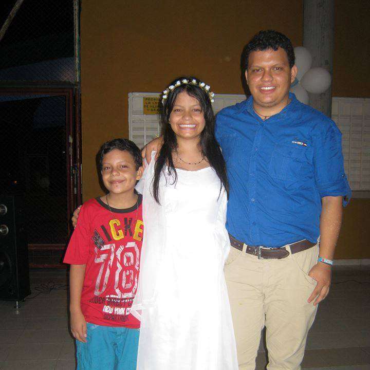

Adriann Felipe Sanchez Sierra



Hola, mi nombre es Adriann Sanchez. Actualmente soy Tecnólogo en informatica de la Corporación Universitaria Minuto de Dios y estudiante de ingeniería de sistemas de la Universidad Piloto de Colombia. Con conocimientos de el desarrollo web con algunos frameworks de PHP (CakePHP, KumbiaPHP, Symfony2) y de python (Django) he participado en diferentes proyectos solucionando necesidades específicas.
Tel: 3118491381
email: adriann.sanchez1@gmail.com